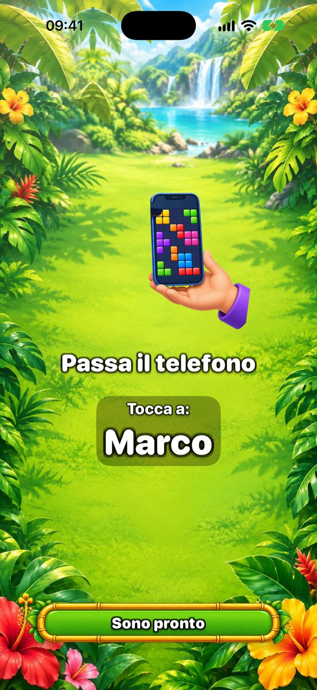
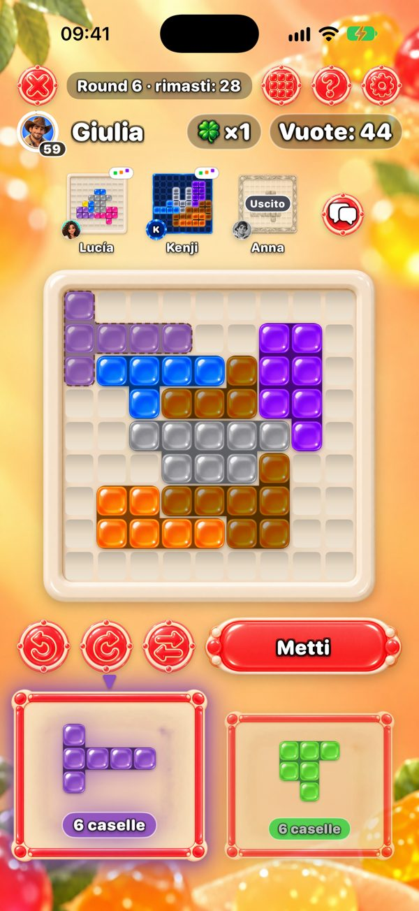
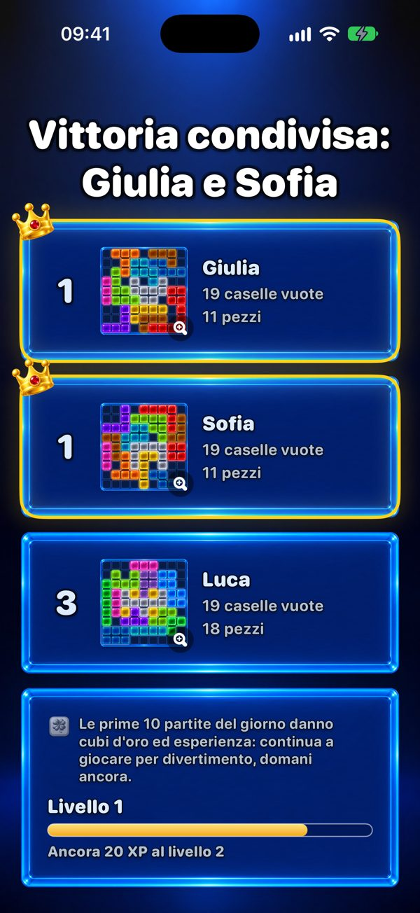

Un gioco da fare insieme su un solo telefono
Cerchi qualcosa da giocare in famiglia con un solo telefono? One More Chance è un rompicapo che passa di mano in mano: ognuno riempie il proprio tabellone 9×9 con gli stessi pezzi, e vince chi lascia meno caselle vuote.


Come si gioca su un solo telefono?
Ognuno parte da un pezzo iniziale estratto a caso, che copre il centro del tabellone. Poi a ogni round compaiono due pezzi. Il primo giocatore ne sceglie uno e lo mette dove vuole sul proprio tabellone — i pezzi si possono ruotare e capovolgere — e passa il telefono. Una schermata «Passa il telefono» indica a chi tocca. Tutti ricevono gli stessi due pezzi, quindi il round è equo; cambia solo come cresce ogni tabellone.

Quante persone possono giocare?
Due giocatori gratis. Con Premium — un solo acquisto, nessun abbonamento — fino a sei persone su un telefono o un iPad. Per un gruppo numeroso, un iPad sul tavolo è perfetto.
Ognuno può usare il proprio telefono?
Sì. I telefoni vicini si collegano via Bluetooth e Wi‑Fi — senza internet — e tutti giocano nello stesso momento, vedendo in alto i tabelloni degli altri. Solo chi crea la partita ha bisogno di Premium per più di due giocatori.

Chi vince?
Chi lascia meno caselle vuote. Se nessun pezzo entra, prendi «Un'altra possibilità»: un pezzo in più solo per te. Un tabellone perfetto, riempito del tutto, è il sogno.

Quanto dura una partita?
Una partita ha al massimo 20 round. Da soli dura pochi minuti; in gruppo dipende da quanto pensa ognuno, perché ogni mossa è un pezzo. Con Premium puoi limitare la mossa a 30, 60 o 90 secondi.
Per che età è?
Su App Store è classificato 13+ per la chat facoltativa con gli amici e la pubblicità. Il gioco in sé sono pezzi colorati su un tabellone: niente violenza, nessuna fretta se il timer è spento, e non serve saper leggere per mettere un pezzo — i più piccoli possono giocare accanto a un adulto.
È gratis? Ci sono pubblicità?
Il gioco è gratis. Le pubblicità compaiono solo tra le partite in solitario — mai in una partita con gli amici, né su un telefono né su più telefoni. Premium toglie la pubblicità e aggiunge sei temi e fino a sei giocatori.
Serve internet?
No. Su un solo telefono e su più telefoni vicini il gioco funziona offline. Internet serve solo per i tavoli online, gli amici e la classifica della Sfida del giorno.
Serata giochi stasera?
Gratis su iPhone e iPad. Passa il telefono e scopri chi lascia meno caselle vuote.
Versione Android in arrivo.